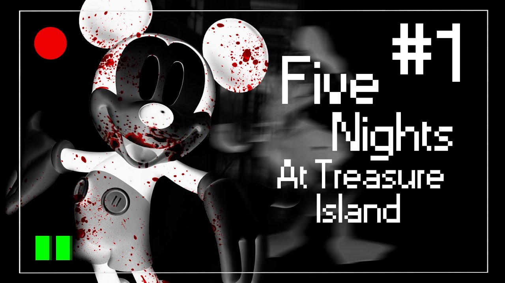

*Five Nights at Treasure Island* é um fan game aterrorizante inspirado no ambiente dos parques temáticos abandonados. O jogo acontece em uma ilha cheia de mistérios, onde o jogador precisa sobreviver às noites observando animatrônicos que tomam formas ameaçadoras.
O jogador deve usar um conjunto de câmeras e ferramentas limitadas para defender-se dos animatrônicos ameaçadores enquanto tenta descobrir o mistério que envolve a ilha.